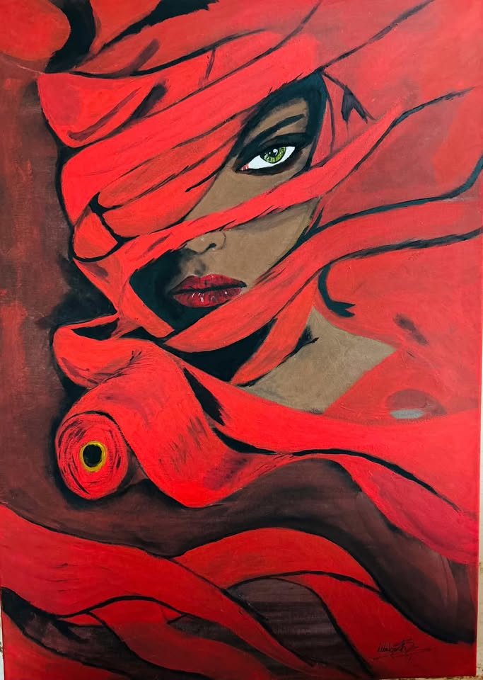
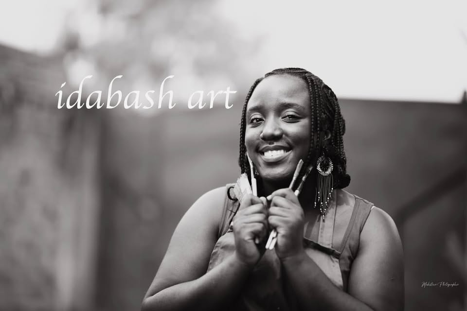
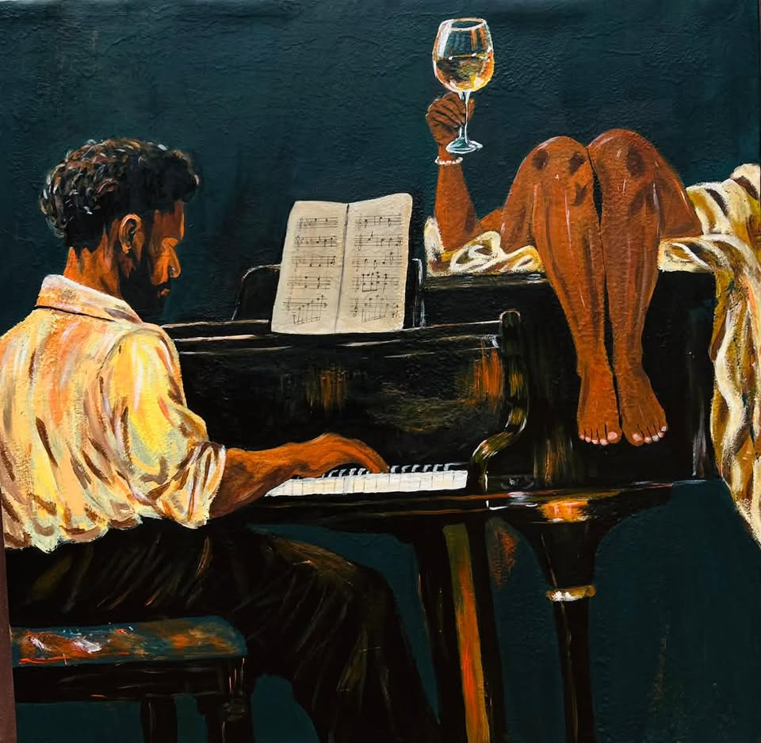
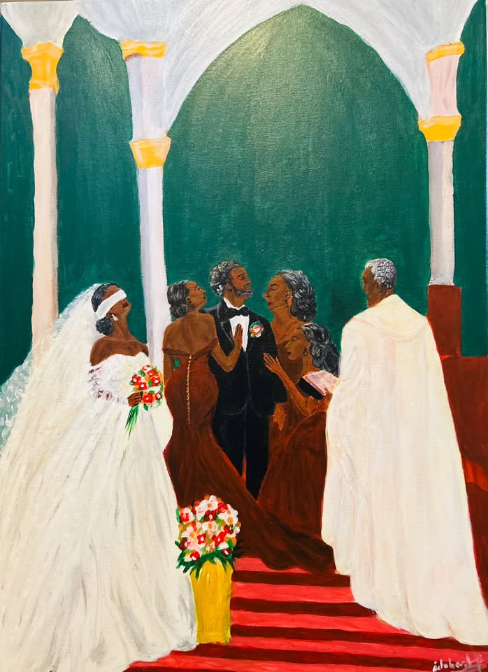
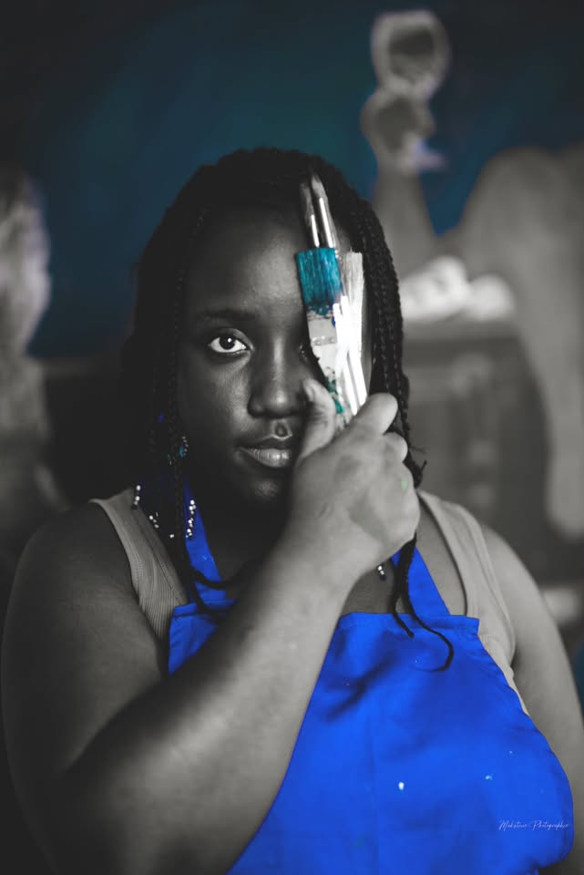

Dame en rouge
Une présence féminine enveloppée de rouge, entre mystère, caractère et expression. Une exploration de la force visuelle de la couleur et de la féminité.
FLORIDA BASHONGA · ARTISTE PEINTRE
Bienvenue dans mon univers artistique, un espace où les couleurs, les formes et les matières donnent vie aux émotions et aux imaginaires.
Découvrir mes œuvres
EXPLORATION VISUELLE
Des fragments d'émotions, de pensées et d'imaginaire traduits en peinture.

Une présence féminine enveloppée de rouge, entre mystère, caractère et expression. Une exploration de la force visuelle de la couleur et de la féminité.

Certaines mélodies ne s’écoutent pas seulement, elles se ressentent, se vivent et se désirent.

Inspirée de la chanson « Migrant des reves » de Fally Ipupa, cette œuvre raconte le choix d'une femme qui, malgré les évidences, décide d'avancer vers le mariage. Elle interroge l'amour, l'espoir et l'ignorance choisie.
Un regard peut révéler ce que les mots taisent. À travers les couleurs et les contrastes, cette œuvre explore les émotions, la perception et les différentes facettes de l'être humain.

Un visage, une présence, une expression qui invite à regarder au-delà des apparences. Cette œuvre explore la singularité du visage et ce qu'il peut révéler ou dissimuler.

QUI SUIS-JE ?
Née le 10 décembre 2002 à Lubumbashi, en République démocratique du Congo, Florida Bashonga est une artiste peintre autodidacte passionnée par l'art depuis son enfance.
Elle est titulaire d'une licence en Stylisme et Création de Mode ainsi que d'un Master en Design, spécialisé en Communication Numérique.
Son univers artistique se nourrit de l'observation du monde, des expériences humaines et de la richesse des émotions. À travers ses créations, elle cherche à donner une forme visible à ce qui est parfois difficile à exprimer avec des mots.
MON UNIVERS CRÉATIF
Ma démarche artistique repose sur l'exploration des émotions humaines, de la mémoire, du temps et de l'imaginaire. Je considère l'art comme un espace de liberté où la matière devient un moyen d'expression.
À travers la peinture, les textures, les reliefs, la céramique, la sculpture et les techniques mixtes, je cherche à dépasser les limites de la représentation classique.
Mon travail consiste à transformer des sensations, des souvenirs et des réflexions en expériences visuelles et parfois sensorielles. Je m'intéresse particulièrement à ce qui se cache derrière les apparences, aux contrastes entre le réel et l'irréel, ainsi qu'à la manière dont une œuvre peut susciter une émotion ou une interrogation.
Je ne cherche pas uniquement à représenter le monde tel qu'il est, mais aussi à imaginer ce qu'il pourrait être.
RESTONS EN CONTACT
Pour une collaboration, une commande artistique ou simplement pour échanger autour de l'art, n'hésitez pas à me contacter.
Me contacter par e-mailSuivez mon univers artistique sur Instagram
@idabash.art